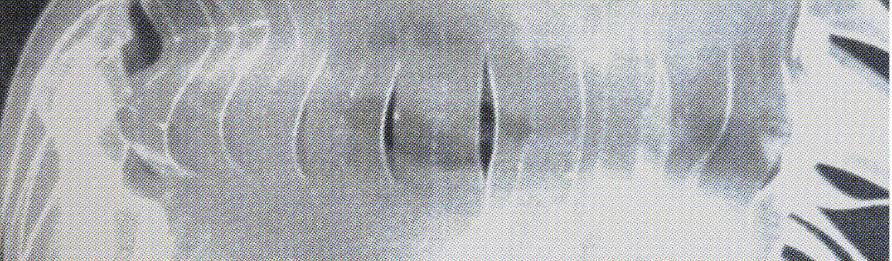

Screenprinting
Unit 1, Project 7

Research
Process
Reflection + Evaluation
Frankly, I found screenprinting quite dull. This was only a half-day tutorial, which may be part of why I was so uninterested, but I find the medium and the process extremely one-dimensional. I can see it being useful as a tool within a larger piece of work, or for practical things, like making a poster or a card. But I don’t really see myself working with it further.